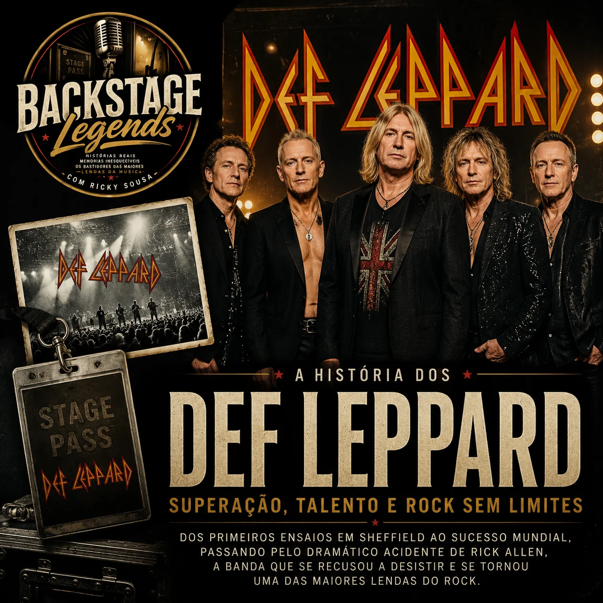

Backstage Legends
Histórias reais, memórias inesquecíveis e os bastidores das maiores lendas da música mundial. Uma rubrica especial apresentada por Ricky Sousa.
🎙️ Exclusivo VelvetVerse Radio

Queen
Nesta edição de Backstage Legends viajamos pela extraordinária história dos Queen, desde a formação da banda em Londres até se tornarem um dos maiores nomes da história do rock. Recordamos Freddie Mercury, Brian May, Roger Taylor e John Deacon, os grandes êxitos, os momentos marcantes e o legado inesquecível que continua a inspirar milhões de fãs em todo o mundo.
Arquivo Backstage

Bonnie Tyler
Uma voz única que marcou gerações e ficará para sempre na história da música.
Dire Straits
A elegância da guitarra e histórias que atravessaram gerações.

AC/DC
A banda que nunca desligou a corrente do rock.
Scorpions • Parte 2
O legado de uma das maiores bandas de rock de todos os tempos.
Scorpions • Parte 1
Dos primeiros anos ao sucesso mundial.

Def Leppard
A banda que transformou adversidade em sucesso mundial.
Leo Sayer
Do menino tímido ao ícone mundial da música.